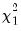

The “name=” option stores the following matrix. Let the VAR have

endogenous variables. Then the stored matrix will have dimension

. The first

rows contain statistics for each orthogonal component, where the first column contains the third moments, the second column contains the

statistics for the third moments, the third column contains the fourth moments, and the fourth column holds the  statistics for the fourth moments. The sum of the second and fourth columns are the Jarque-Bera statistics reported in the last output table.
See “Vector Autoregression (VAR) Models” for a discussion of the test and other VAR diagnostics.